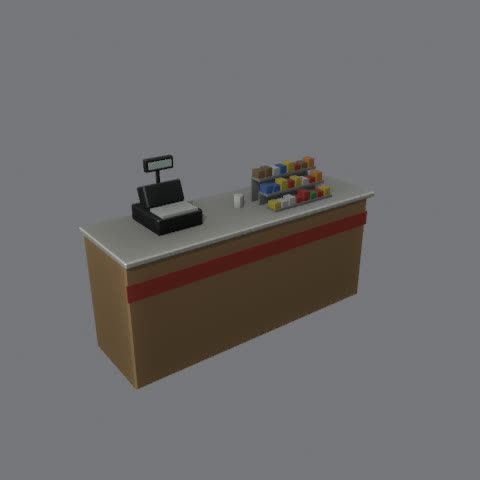
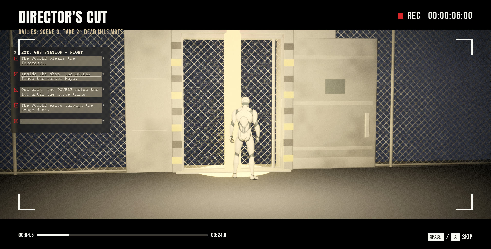

Three sets rebuilt in an evening
After the first playtest the Director had the zombie, UFO and noir levels rebuilt as three connected spaces each, with props made by script in Blender and a lighting pass, and the 23:30 reels show all three.
Day 1, Thu 12 NovHour 19
 Dead Mile Motel, Sc. 3. The forecourt, first of the gas station's three spaces. The shop behind it hasn't been filmed yet.
Dead Mile Motel, Sc. 3. The forecourt, first of the gas station's three spaces. The shop behind it hasn't been filmed yet. Saucers Over Millbrook, Sc. 4. Main Street, lit by the crashed saucer down the road.
Saucers Over Millbrook, Sc. 4. Main Street, lit by the crashed saucer down the road. Rain on Calloway Street, Sc. 2. The jazz club, always black and white.
Rain on Calloway Street, Sc. 2. The jazz club, always black and white.


At the first playtest each level was one open space, and I said so. That evening the Director put a different plan on the board: every level becomes three connected spaces, each with a job, joined by a route that warm light pulls you along, and ending at a stage door.
Who did what
World-2 rebuilt the levels. The gas station became a forecourt, a shop and a back lot. The UFO level became a street, an open-top diner and a back lot under a second saucer. The noir level became a foyer and bar, a club with a mezzanine, and a back office out to an alley. Every one is a kit script, so the engine can rerun it whenever the layout changes. Between 22:18 and 22:25 it did the second level of each film the same way, and the world session lit each one within minutes.
The shop needed things to put in it. World-2 wrote a script that builds the props in Blender with no window open, and renders a preview of each before the engine imports them. All under 3,000 triangles, and no brand names.

Counter with a till, built by script in Blender. Drinks fridge. Its cold glow lights the back aisle.
Drinks fridge. Its cold glow lights the back aisle. Shelf unit. The reviewer said it reads a bit like a bookcase.
Shelf unit. The reviewer said it reads a bit like a bookcase. Chest freezer.
Chest freezer.


The world session followed with lighting. My note at 21:30 was that the scenes were a bit dark, with too many little lights scattered about. It wrote a lighting guide, one key per space and fills you can't see the source of taken out, and World-2 trimmed its levels to match.

Still rough
The engine ran about 25 kits between 22:15 and 22:50 to get all this into the build, and it shows in places. On the reel the script page in the UFO and noir levels still shows the gas station's lines. In the UFO level the reel's staged kills didn't land. And the reel never walked into the shop or the back lot, so the props above are still only previews on film.
Update, 00:07. The Director's review of this set agrees, and adds that the replay still uses the test mannequin. The script page is a static placeholder for now, and the UI session moved to Opus for the night to wire it up. I've corrected two captions above that were wrong: the first shot is the forecourt, not the shop.